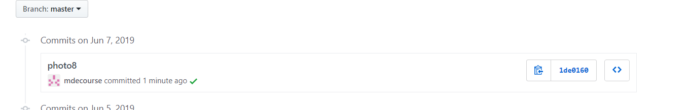

ROC flag << Previous Next >> 校園授權軟體下載專區
ROC flag << Previous Next >> 校園授權軟體下載專區
虎科VPN設定
依您的作業系統版本下載使用者端程式

程式下載完成後，點擊兩下開始安裝
進行身份驗證(可由Juniper Network Connect或IE，請擇一進行身分認證)
點選搜尋" > 輸入程式名稱為Network Connect> 點擊Network Connect
執行程式後，於"登入頁面"輸入網址 : https://sslvpn9.twaren.net/nfu ，後按下"執行"
輸入使用者帳號密碼，請填入校務行政AD帳號及密碼。請完整填寫您在校務行政AD帳號以及密碼，否則國網中心找不到對象進行身份確認
！(例: 員工編號或學號@ctx10.nfu.edu.tw）
出現"設定控制-警告"視窗，按下"是"
螢幕右下角顯示"已連接"，表示已成功連線
請在IE瀏覽器上按下右鍵 使用"以系統管理員身分執行"
登入頁面請輸入： https://sslvpn9.twaren.net/nfu，按下「執行」，會出現帳號與密碼登入欄位。
請填入虎尾科技大學的校務行政AD帳號及密碼，並請輸入下方驗證碼，進行身份確認。
請完整填寫您在虎尾科技大學的校務行政AD帳號以及密碼，否則國網中心找不到對象進行身份確認！
請填入虎尾科技大學的校務行政AD帳號及密碼，並請輸入下方驗證碼，進行身份確認。
請完整填寫您在虎尾科技大學的校務行政AD帳號以及密碼，否則國網中心找不到對象進行身份確認！
(例: 員工編號或學號@ctx10.nfu.edu.tw）
填寫完畢以後按下Login登入就會開始進行身份確認，請稍後一段時間。
填寫完畢以後按下Login登入就會開始進行身份確認，請稍後一段時間。

點選「開始」
點選「是」，SSL VPN程式安裝完畢後，就會開始跟你的電腦建立連線，請稍後一段時間
VPN連線建立完成
連線建立完成後，在電腦的工作列上(桌面右下角)，會出現 Juniper Network Connect VPN Client的圖示，表示VPN連線已經成功的建立在你的電腦上了。點擊圖示兩下，即可查看連線資訊。(註:指派IP:一定為120.113.100.XX)。
到此，您的SSL-VPN連線已經成功的建立，不管是在家裡還是出差，您的電腦就像在學校使用一般，您可以自由的使用虎尾科技大學自己擁有的網路資源。
參考資料https://nfucc.nfu.edu.tw/index.php/zh/download/download-network/ssl-vpn
ROC flag << Previous Next >> 校園授權軟體下載專區